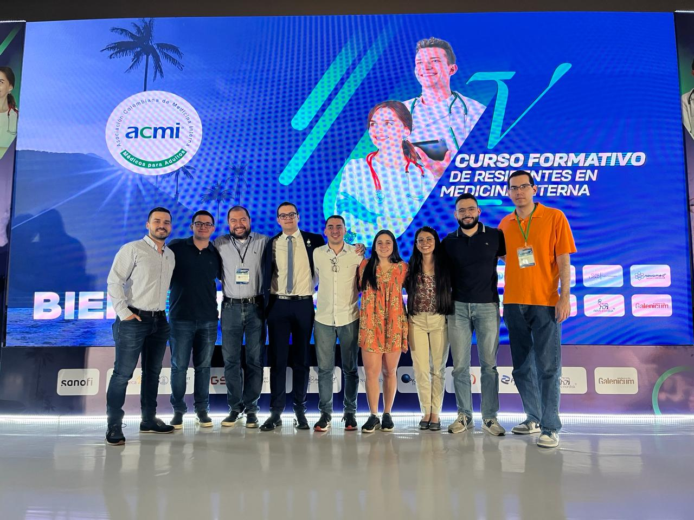

El V curso formativo de medicina interna fue un escenario de gran éxito para la Universidad Tecnológica de Pereira, donde sus residentes destacaron con una notable victoria. Omar Armando Gutiérrez, residente de tercer año de la especialización en medicina interna en la UTP, nos cuenta sobre su experiencia y el reconocimiento obtenido
En días recientes, la UTP tuvo el honor de participar en el V curso formativo de residentes en medicina interna, compitiendo con 32 facultades de todo el país en la categoría de casos clínicos. El equipo de la UTP se destacó como la facultad ganadora del premio al mejor caso clínico, un logro que enaltece el proceso de formación de la universidad y posiciona el nombre de la facultad de medicina interna a nivel nacional.
El premio les otorga una pasantía en España en un curso de verano en medicina interna, una oportunidad invaluable para seguir fortaleciendo su formación y ampliando su experiencia profesional. Para Omar y su equipo, esta victoria es el resultado del arduo trabajo de tres años, del esfuerzo de los profesores y del compromiso personal de cada uno.